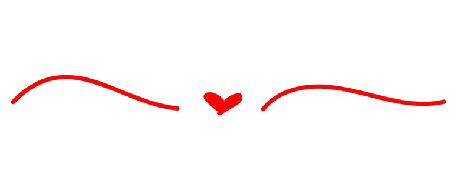

ㅤㅤDesde a primeira vez em que te vi, fiquei encantado com sua beleza, era como uma flor vermelha destacada em volta de milhares de flores brancas, uma sensação totalmente diferente, tendo em vista a quantidade de tempo preso dentro de casa devido a uma terrível pandemia. Te olhava pelos corredores da mesma forma que o Pequeno Príncipe olhava para sua rosa todos os dias em seu pequenino planeta.
ㅤㅤEra um sentimento especial, como se fossemos ter alguma ligação importante no futuro, mal sabia eu o que me aguardava, de início não demos certo, e admito que grande parte da culpa foi minha, mas ao mesmo tempo, sinto que foi necessário para amadurecermos com o tempo. E então no início do ano letivo de 2023, nós reatamos nossos laços, começamos a nos falar novamente e eu sentia que algo tinha mudado, ainda sem confiança depois dos acontecimentos de 2022 não me sentia seguro para dizer que gostava de ti, apesar de que de certa forma eu alimentava este sentimento em meu peito.
ㅤㅤCom o passar do tempo, fomos gostando um do outro cada vez mais, até ficarmos pela primeira vez, um dos momentos que mudariam completamente nossa história. Um leque de emoções se abriram pra mim após isso, pensava a todo momento em você e ia para escola com a esperança de te trombar nos corredores a cada vez que saía de sala, tudo que eu mais pensava era em quando iríamos ficar juntos novamente.
ㅤㅤApós a passagem desta fase eu senti que estava na hora de finalmente te pedir em namoro, e apesar de não ter sido nenhum pedido tão bonito, eu sentia que eu queria isso o quanto antes, era algo que eu não podia mais guardar pra mim, e pra nossa felicidade, iniciamos o nosso namoro em 16 de agosto de 2023 se tornando assim a nossa data especial, o início do nosso relacionamento que viria a ser tão duradouro.
ㅤㅤVocê se tornou uma das pessoas mais especiais para mim, minha primeira namorada, minha melhor amiga, a pessoa com quem perdi minha virgindade, minha motivação para querer ser uma pessoa melhor.